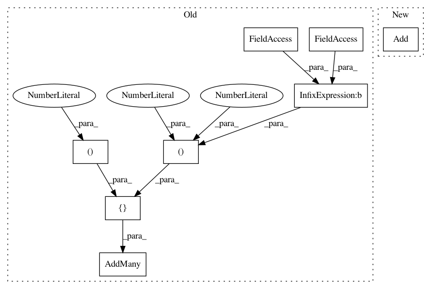

a47cf1097754f7108c7f2b698c34bf3ca311b044,cellprofiler/gui/preferencesview.py,PreferencesView,__make_odds_and_ends_panel,#PreferencesView#,177
Before Change
wx.EVT_CHOICE, on_write_MAT_files_combo_box)
output_filename_help_button = wx.Button(panel,-1,"?", (0,0), (30,-1))
sizer = wx.BoxSizer(wx.HORIZONTAL)
sizer.AddMany([
(output_filename_help_button,0,wx.ALIGN_CENTER|wx.ALL,1),
(self.__output_filename_text,0,wx.ALIGN_CENTER,1),
(self.__output_filename_edit_box,5,wx.ALL,1),
(self.__allow_output_filename_overwrite_check_box, 0, wx.ALIGN_CENTER | wx.ALL, 1),
((1, 1), 1),
(wx.StaticText(panel, label = "Measurements file format:"), 0, wx.ALIGN_CENTER | wx.ALL, 1),
(self.__write_measurements_combo_box, 0, wx.ALIGN_CENTER | wx.ALL, 1)])
panel.SetSizer(sizer)
panel.Bind(wx.EVT_BUTTON,
lambda event: self.__on_help(event, OUTPUT_FILENAME_HELP),
output_filename_help_button)
After Change
sizer = wx.FlexGridSizer(2, 3, 2, 2)
sizer.SetFlexibleDirection(wx.HORIZONTAL)
sizer.AddGrowableCol(2)
sizer.Add(output_filename_help_button, 0, wx.ALIGN_CENTER)
sizer.Add(self.__output_filename_text, 0, wx.ALIGN_RIGHT)
sub_sizer = wx.BoxSizer(wx.HORIZONTAL)
sizer.Add(sub_sizer, 1, wx.EXPAND)
sub_sizer.Add(self.__output_filename_edit_box,1 , wx.EXPAND)
In pattern: SUPERPATTERN
Frequency: 3
Non-data size: 8
Instances
Project Name: CellProfiler/CellProfiler
Commit Name: a47cf1097754f7108c7f2b698c34bf3ca311b044
Time: 2013-04-26
Author: leek@broadinstitute.org
File Name: cellprofiler/gui/preferencesview.py
Class Name: PreferencesView
Method Name: __make_odds_and_ends_panel
Project Name: CellProfiler/CellProfiler
Commit Name: a47cf1097754f7108c7f2b698c34bf3ca311b044
Time: 2013-04-26
Author: leek@broadinstitute.org
File Name: cellprofiler/gui/preferencesview.py
Class Name: PreferencesView
Method Name: __make_folder_panel
Project Name: CellProfiler/CellProfiler
Commit Name: acd1379758bbe73a4740820ff9ffbdde061e09e5
Time: 2009-10-02
Author: afraser@1fc53939-2000-0410-845c-e8453a809027
File Name: pyCellProfiler/cellprofiler/gui/cpframe.py
Class Name: CPFrame
Method Name: __layout_logo